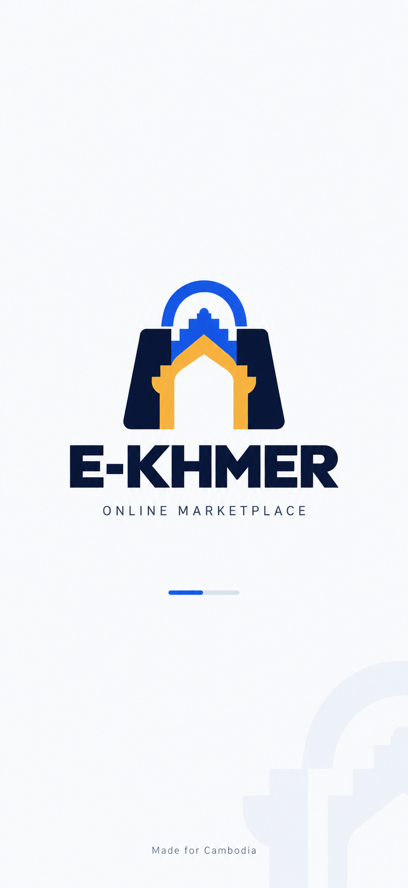
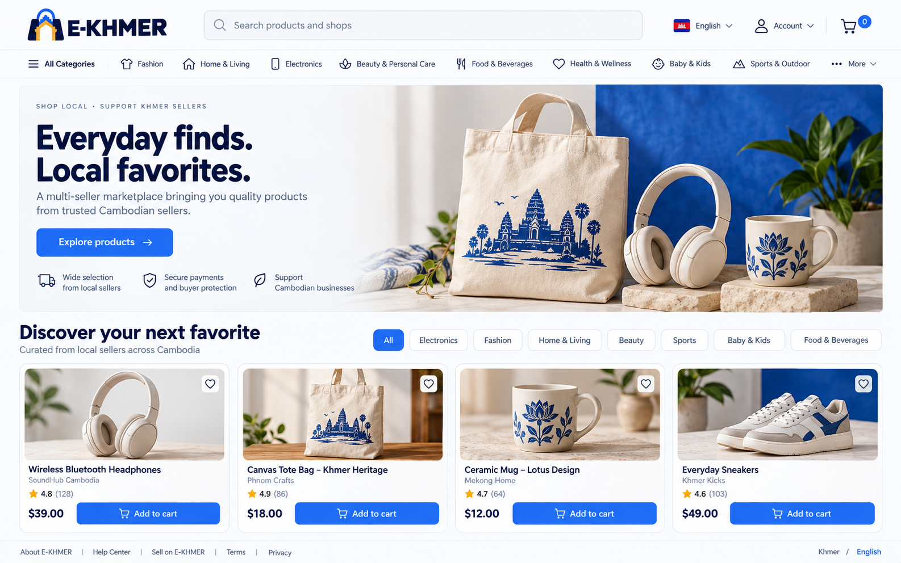
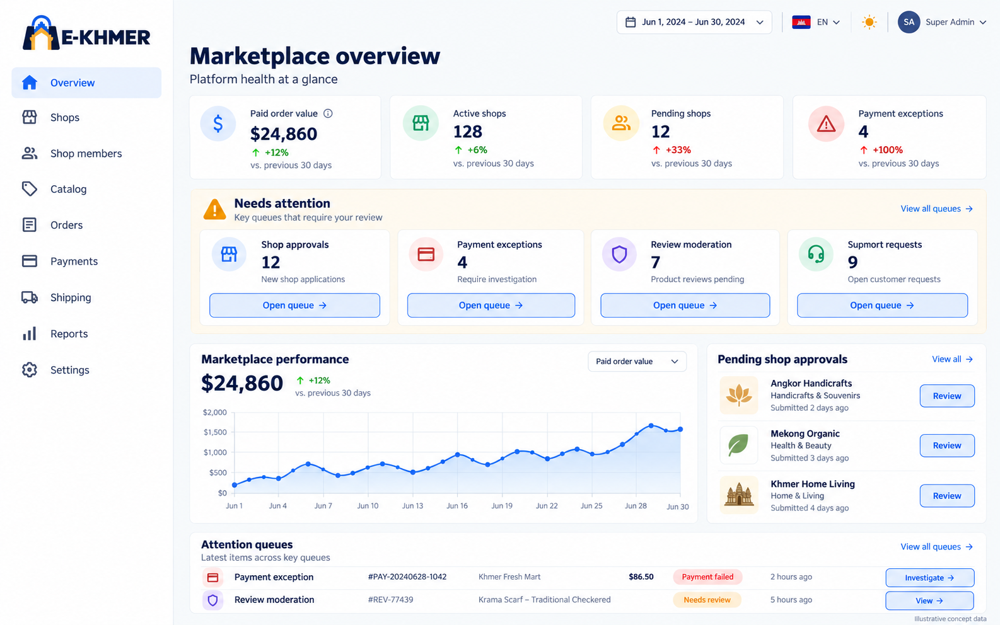

The identity
The app experience
One mark, a clear arrival.
The icon identifies the app at a glance. The splash screen gives it a calm, spacious opening. Use real loading state and responsive layout when building it.

The visual system
#2563EB#0B1739#F2B544#F8FAFC#64748BType with room to breathe
Inter for English. Kantumruy Pro for Khmer. Comfortable body sizes and extra line height preserve Khmer marks and readability.
Consistent components
12px card corners, fine borders, a 4px spacing base, and 44px interaction targets. Blue leads actions; gold supports the identity.
Language with clear intent
Show the destination flag: UK while reading Khmer, Cambodia while reading English. Keep a tooltip and accessible action name.
The desktop direction


Ready for team review
This package defines the visual direction. The next production step is a clean vector identity, platform-specific icon exports, and a component rollout that preserves the current application behavior.
Read the full design and implementation guide · View design tokens · View generation prompts